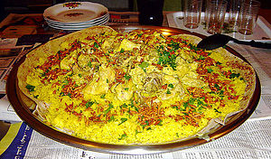

Mansaf
Ingredients
- 2 lamb with bone, large pieces.
- Quarterly sliced onion.
- 3 bay leaves.
- 10 lobe hill.
- 2 cinnamon sticks
- A tablespoon of spice mix or spice Mansaf.
- 10 cloves of black pepper.
- 2 tablespoons of salt.
- 3 cups of basmati rice.
- Quarter of a cup of ghee.
- 2 tablespoons of salt.
- 1 teaspoon turmeric.
- 1/2 4 cups of water.
- 1/2 1 kilo of yogurt.
- 2 tablespoons of starch.
- 2 tablespoons of curdled milk.
- 1/4 cup water.
- 1 teaspoon turmeric.
- A quarter of a teaspoon of mixed spice or Mansaf spice.
- Bread wafers.
- Chopped parsley.
- Fried nuts.
Recipe
- Wash the rice well and soak it for half an hour.
- To boil the meat: In a medium-sized pot, put the meat, onions and heavy water and put the pot on a strong heat until it boils and gets rid of the foam.
- Add bay leaf, cinnamon, cardamom, pepper, salt and spices, cover the pot until the meat is cooked over medium heat for two hours, then remove the meat and set it aside.
- To cook the milk: In a small dish, mix the water with the starch, then put the milk in a wide saucepan with turmeric, curd and starch, stirring with a hand mixer to soften the texture, and put the pot on the fire with stirring until it boils, add a cup of broth, then make the milk boil for 10 minutes. minutes.
- Add the meat to the milk and let it boil for 5 minutes.
- To cook the rice: Heat the ghee in a medium saucepan, then add the rice and stir until all the grains are covered with ghee, add salt and turmeric and stir, then add the water and leave it until it boils and the rice is absorbed, then cover the rice and leave it for half an hour on a low heat to simmer.
- To serve: We put the bread in a wide tray and spread a quantity of milk on it, then we distribute the rice on the bread, and on top of the meat, and sprinkle with nuts and parsley, and put the rest of the milk in a deep dish.